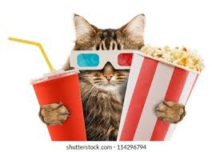

Razones por cuales me gustan las series o Peliculas Es una actividad que hago con mi familia Cuando suelo estar aburrido y no tengo ganas de jugar, prefiero ver alguna serie Me emocionan las series que son de suspenso principalmente  Yo de sabado a domingo